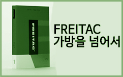

[파주북소리]안그라픽스 부스 파주북소리 2016년 열독열정에 안그라픽스가 함께합니다.
2017년 10월 1일부 터 10월 3일, 안그라픽스 부스를 찾아보세요.
장소: 파주출판도시
내용: 개막식,테마전시,콘텐츠엑스포,북소리 피크닉 낭독공연, 북콘서트 등등
주최: 파주시, 출판도시문화재단 문의 031-955-0055
일본에서 열리는 에밀 루더의 전시
[danke Emil Ruder] 전 2014.3.20 목 – 4.29 화 도쿄 ‘프린트갤러리’
월/금: 15:00 – 20:00 휴일/주말: 13:00 – 20:00 화, 수, 목: 휴관
특별 개장: 3.20 목 15:00 – 20:00 4.29 화 13:00 – 20:00
[생각이 막힐 때 BREAK EAT SPICYFOOD!] 북트레일러
생각이 막힐 때 Break EAT SPICYFOOD!
엮은이 알렉스 코넬 | 옮긴이 유영훈
사양 소프트커버 · 148x200 · 248쪽 가격 15,000원 ISBN 9788970597249
안그라픽스 X 땡스북스[디자이너는 어떻게 생각하는가] 전시
일시 : 2013.06.28 – 07.25 장소 : 서교동 땡스북스
안그라픽스와 땡스북스의 합동전시
[디자이너는 어떻게 생각하는가 전시}에서 이벤트를 진행합니다.

타이포그래피 서울에 소개된 [프라이탁, 가방을 넘어서]
올해 출간된 여러 안그라픽스 책 가운데 여러분에게 사랑받는
[프라이탁: 가방을 넘어서]가 타이포그래피서울에 소개되었습니다.
타이포그래피 서울은 (주)윤디자인연구소에서 운영하는 타이포그래피와 디자인
을 전문으로 다루는 웹진입니다.